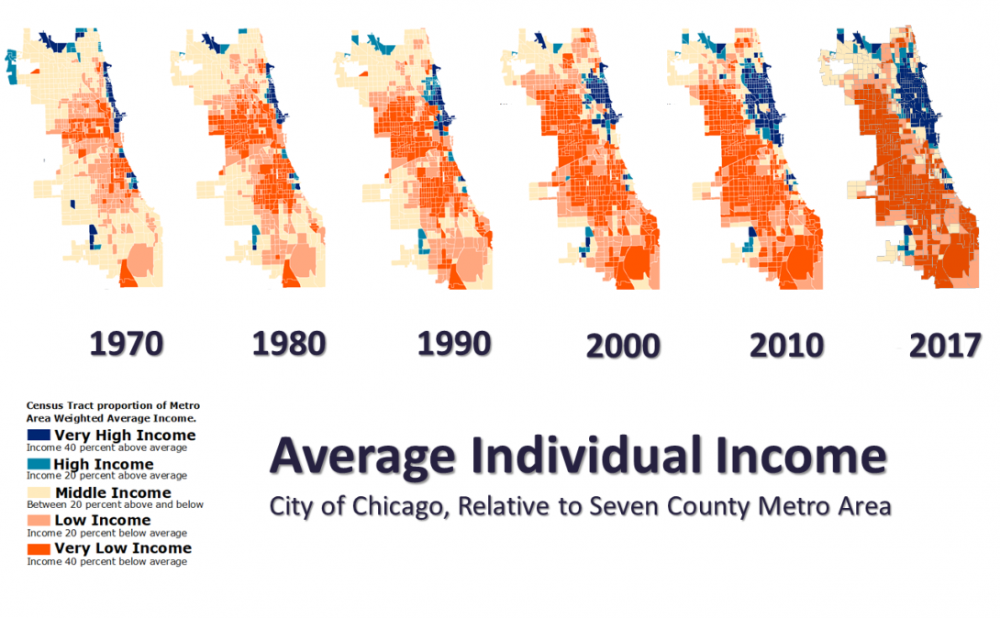
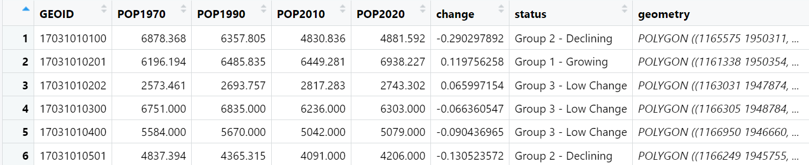

# You may need to install the packages: tidycensus, tigris and gt
library(tidyverse)
library(sf)
library(tidycensus)
library(tigris)
library(gt)Download and analyze Census data with 
11.S196/11.S939 Applied Data Science for Cities
Overview
In this lab, we will use Decennial Census data and American Community Survey (ACS) data to examine long-term population trends in neighborhoods.
The Nathalie P. Voorhees Center has conducted research on neighborhood and community improvement in the City of Chicago. In their Three Cities report, they calculate the average per capita income for each census tract in Chicago for the years 1970, 1980, 1990, 2000, 2010, and 2017, and then compare it to the regional weighted average income. They have found Chicago has become more segregated by income over time and is losing its middle class.

In their study, census tracts are classified into “three cities”: those that have increased their share of regional income by 20% or more from 1970 to 2016, those that have changed by less than 20%, and those that have decreased by 20% or more. The study also summarizes socio-demographic characteristics in these areas.

We will take the idea of the Voorhees Center’s study to examine population change in Chicago. We’ll look at population by census tracts over decades to see if we can categorize tracts as gaining, losing, or staying stable in population.
Here are the packages we are going to use today.
Step 1 Collect Population Data
To analyze tract-level population change, we need to gather population data for Chicago across multiple years and make comparisons. In this exercise, we’ll obtain population data in four years: 1970, 1990, 2010, and 2020.
If we can assemble a table like the one below, with rows representing tracts and columns being the years, we will be able to see the trend and calculate the percentage change in population from 1970 to 2020. This percentage change will enable us to categorize areas based on population increases or decreases, similar to the “three cities” methodology used by the Voorhees Center.
| Census Tract | 1970 | 1990 | 2010 | 2022 |
|---|---|---|---|---|
| 17031822400 | 4336 | 5956 | 6226 | 6012 |
| 17031740100 | 4060 | 3297 | 3048 | 3075 |
| 17031828100 | 5599 | 4804 | 4844 | 5388 |
| 17031826600 | 6290 | 5168 | 5540 | 4872 |
Review the Process of Making Census API Calls
We will first review how to use tidycensus to download data for the most recent year 2022. You’ll need a Census API key (Here is where you can request one from the census bureau). After you’ve signed up for an API key, remember to activate the key from the email you receive.
Declaring install = TRUE when calling census_api_key() will install the key for use in future R sessions, which may be convenient for many users.
census_api_key("yourkeyinquotationmarks", install = TRUE)(If you’re having trouble with your key, restarting R might fix it!)
As a review, to complete the API call for ACS data, you will typically need to specify:
- A desired geography to look up (i.e. data by what area)
- The variable IDs we want to look up (we have the table codes, and the complete variable list for 2022 5-year ACS.
- The state and county names to define your study region.
- The census year you want data for.
- The survey you’d like to use (such as ACS 1-, or 5-year data)
The following code returns the number of total population by tract in Cook County, Illinois (where Chicago is in) in 2022. The table I consult is B01001: Sex by Age.
F_2022 <- get_acs(
geography = "tract",
state = "IL",
county = "Cook",
variables = "B01001_001",
year = 2022)As discussed in class, we can choose to download multiple variables, reshape the table, calculate percentages, and then add the geometry column for quick mapping.
output = "wide"downloads data is in wide format, where each variable (e.g., totpop, Male_25to29) is represented as a separate column, and each row represent one tract.geometry = TRUEreturns a simple features (sf) object with spatial information saved for each tract. The returned table will include ageometryvariable that enables spatial analysis.
For example, display one or more age groups, such as the male and female population aged 25–29:
B01001_Vars <- c(totpop = "B01001_001",
Male_25to29 = "B01001_011", # look up the variable IDs
Female_25to29 = "B01001_035")
F_2022 <- get_acs(
geography = "tract",
state = "IL",
county = "Cook",
variables = B01001_Vars,
output = "wide",
geometry = TRUE,
year = 2022)Map 1
F_2022 |>
# remove all Margin-of-error columns
select(-ends_with("M")) |>
# Clean up the column names
rename_with(~ str_remove(., "E$")) |>
# Prepare for a faceted map
pivot_longer(cols = c(Male_25to29, Female_25to29),
names_to = "gender_group", values_to = "group_pop") |>
ggplot() +
geom_sf(aes(fill = group_pop/totpop))+
facet_wrap(~ gender_group) +
labs(fill = "Proportion of Total Population")+
theme_void()Decennial data (get_decennial)
In addition to get_acs(), tidycensus also provides get_decennial() for retrieving data from the US Decennial Census for the years 2000, 2010, and 2020. The function uses similar arguments, as shown below:
F_2010 <- get_decennial(
geography = "tract",
state = "IL",
county = "Cook",
variables = "P001001",
geometry = TRUE,
year = 2010)So far you might have seen our first problem: for both API calls, we don’t have the option for getting tract-level data for cities - because tracts are not nested within places. We will come back to it later to cut out tracts within Chicago’s spatial boundary. That’s why we’ve included the argument geometry = TRUE, which will be needed for our spatial processing.
Our second problem is that these two datasets have different number of observations. F_2022 contains 1332 tracts, F_2010 contains 1319 tracts. Additionally, more than 40 GEOIDs have changed between the datasets:
setdiff(F_2022$GEOID, F_2010$GEOID) [1] "17031320101" "17031804316" "17031809402" "17031380600" "17031824128"
[6] "17031490200" "17031804315" "17031330103" "17031824126" "17031844700"
[11] "17031829904" "17031844600" "17031630600" "17031829903" "17031828508"
[16] "17031820204" "17031803613" "17031330101" "17031806006" "17031804204"
[21] "17031460800" "17031806005" "17031803614" "17031828507" "17031824508"
[26] "17031824127" "17031824125" "17031824124" "17031824129" "17031804313"
[31] "17031820203" "17031803615" "17031804314" "17031320102" "17031809401"
[36] "17031803616" "17031804513" "17031824509" "17031804514" "17031804312"
[41] "17031804203" "17031330102" "17031804512" "17031612200"The U.S. Census Bureau adjust geographies every 10 years. Census geographies are based on population, and population change over time. Some tracts stay the same, but others may split as populations grow or merge when populations decline. The Census Bureau keeps geographic relationship files to document the relationships between geographies over time.
Additionally, we cannot continue to use get_decennial() for the 1990 and 1970 data for our analysis. The main reason is that the Census Bureau has removed the API endpoints for earlier years.
Longitudinal Tract Database (LTDB) Data Download
Analysts often face the challenge of geographic inconsistencies when working with longitudinal data. To make it easier for researchers, Brown University’s Longitudinal Tract Database (LTDB) offers demographic estimates for decennial census years from 1970 to 2020 adjusted to match the 2010 census tract boundaries. This means the tract areas and IDs match the 2010 geography, with attribute values recalculated based on population share.
Let’s get familiar with LTDB data and how to use them. Go to the data download page. You will need to enter your email address and certify that you will follow terms of use for the data.
Review the data standard descriptions a bit to see what datasets are available. In our analysis, we will only use the Standard Full Data Files for population counts.
In “Download Standard Full Data Files”, select the year 1970, click the download button. Then do the same for 1990 and 2020. Save the three .csv files into your project folder.
Now we can import these datasets using read_csv. Simultaneously, we’ll use filter() to extract only the portion for Cook County.
F_1970 <- read_csv("LTDB_Std_1970_fullcount.csv")|>
filter(county == "Cook County" & state == "IL")
F_1990 <-
read_csv("LTDB_Std_1990_fullcount.csv") |>
filter(county == "Cook County" & state == "IL")
F_2020 <-
read_csv("ltdb_std_2020_fullcount.csv") |>
filter(substr(TRTID2010, 1, 5) == "17031")
# We will not use the 2022 data for the rest of the lab, so feel free to remove it if you'd like:
rm(F_2022)Step 2 Compile Datasets
Now we have download data of the four years: 1970, 1990, 2010, and 2020, we can start planning how to join them for mapping and further analysis. Joins allow us to merge datasets based on common attributes, such as GEOID in our case. However, we’ll notice a few things after a quick look at these datasets:
1) The column names for GEOID and population are not the same across years. For example, the attribute GEOID is named as TRTID10 in the F_1970 and F_1990 datasets.
We can retain the columns we need by using
select(), and apply consistent column names by specifying [new name] = [column name] in our select calls.
2) If we do a test left_join, we will notice another issue from its error message:
left_join(F_2010, F_1990, by = c("GEOID" = "TRTID10"))
Some of our GEOID columns are saved as characters while others are numeric, preventing them from directly joining. To resolve this, we can use
mutate()andas.character()to convert the attribute type.
Alternatively, we can specify the column types while reading the data, using the
col_typesargument inread_csv().
With all these in mind, let’s clean up the datasets for joining. In the following code, I have saved them as new datasets (starting naming with “S_” so that we can keep our original data and come back if we need to).
S_1970 <- F_1970 |>
# select and rename the columns we need
select(GEOID = TRTID10, POP1970 = POP70)|>
# convert the data type to character
mutate(GEOID = as.character(GEOID))
S_1990 <- F_1990 |>
select(GEOID = TRTID10, POP1990 = POP90) |>
mutate(GEOID = as.character(GEOID))
S_2010 <- F_2010 |>
select(GEOID, POP2010 = value) |>
# We are preparing data for non-spatial joins at this point, so I'm using st_drop_geometry() to exclude the spatial information here.
st_drop_geometry()
S_2020 <- F_2020 |>
select(GEOID = TRTID2010, POP2020 = pop20) |>
mutate(GEOID = as.character(GEOID)) Regarding types of joins, a left_join keeps all rows from the left dataset, even with no matches in the right, while a right_join keeps all rows from the right. In our case, small discrepancies exist because some tracts did not exist before 1990. For practical purposes, we should prioritize the most recent geographies. Given the left-to-right reading habit, it might make sense to place the 2020 data on the right side and perform right_joins.
An additional trick: a typical xxx_join function only works with two datasets at a time, which means if we want to join four or more datasets, we have to:
# Only for showing, do not run #
pop_data <- right_join(S_2010, S_2020, by="GEOID")
pop_data <- right_join(S_1990, pop_data, by="GEOID")
pop_data <- right_join(S_1970, pop_data, by="GEOID")However, we can do this with less code and repetition using the reduce() function from the purrr package in combination with right_join(). Although we haven’t introduced it, the purrr package in tidyverse is designed for working with functional programming concepts like loops and recurrence.
pop_data <-
reduce(list(S_1970, S_1990, S_2010, S_2020),
right_join, by = "GEOID")Our joined result pop_data now has the same number of rows as the 2020 dataset - because we placed it on the right and applied right_join() sequentially to the left. Now we have a final result structured as intended from the beginning.

Step 3 Calculate and summarize changes
Compare population changes
We now have compiled population data in one table. Our next step is to calculate the percentage change in population for each tract and classify the tracts based on whether their population has significantly decreased, increased, or remained largely unchanged in the past ~50 years, following the Voohver Center’s approach.

Try to insert your own code to achieve the following, before you read along to the next chunk:
Calculate the population change from 1970 to 2020 by computing the percentage increase (POP2020 - POP1970) / POP1970. Use
mutate()for this and create a new column called “change”.Create another column called “status” to classify the changes. Label the changes less than 10% as “Low Change”. Label changes greater than 10% as “Growing”, and less than -10% as “Declining”.
Note that we also have a small number of missing values (NAs) in
changebecause some 2010 tracts did not exist in earlier years. To account for that I included a fourth category instatusnamed “Uncategorized”.
How to populate values based on multiple conditions? The traditional and more straightforward approach is using the if_else() statement. Combining it with mutate, it looks something like this:
# Only for showing, do not run #
pop_data |>
mutate(status = ifelse(change < -0.1, "declining",
ifelse(change > 0.1, "growing",
ifelse(is.na(change), "uncategorized", "low change"))))However, dplyr offers a more concise solution. Check out case_when, which simplifies handling multiple conditions by eliminating the need for nested if else statements within multiple parentheses.
pop_data <- pop_data |>
mutate(change = (POP2020 - POP1970)/POP1970)|>
mutate(status = case_when(
is.na(change) ~ "Uncategorized",
change > 0.10 ~ "Group 1 - Growing",
change < -0.10 ~ "Group 2 - Declining",
TRUE ~ "Group 3 - Low Change"
))Create summary tables
As the dataset is now prepared, we can use group_by() and summarise() to find out how many tracts are in each category.
pop_data |>
group_by(status) |>
summarise(num_tracts = n())# A tibble: 4 × 2
status num_tracts
<chr> <int>
1 Group 1 - Growing 422
2 Group 2 - Declining 639
3 Group 3 - Low Change 256
4 Uncategorized 2Speaking of summary tables, gt() is another powerful tool for creating customizable and polished tables with ease. For instance, we can add a few more lines in the previous code to enhance this table by adding titles and coloring. There are also many other styling options available.
pop_data |>
group_by(Status = status) |>
summarise(`Number of Tracts` = n()) |>
gt() |>
tab_header(title = "Change in Population, 1970-2020",
subtitle = "Cook County, IL") |>
tab_options(column_labels.background.color = 'dodgerblue4')| Change in Population, 1970-2020 | |
|---|---|
| Cook County, IL | |
| Status | Number of Tracts |
| Group 1 - Growing | 422 |
| Group 2 - Declining | 639 |
| Group 3 - Low Change | 256 |
| Uncategorized | 2 |
Step 4 Clip out Chicago
As you might have noticed, we are still working with Cook County so far. How is Chicago located within Cook County exactly? Let’s visualize that with the help of another census-related package tigris.
Obtain census geographies
tigris fetches census geographies. You can think of it as a programmatic way of downloading TIGER/Line Shapefiles. It uses geographic entities as function names. For example, tracts() indicates that you want to download tract boundaries, and county() indicates you want to download county boundaries, and so on.
The function place() fetches the boundary for census-designated places. The city of Chicago is one of such places in Illinois.
options(tigris_use_cache=TRUE) # This is to allow tigris to use caching for downloaded data so that we don't need to fetch the same data again the next time you need it.
# Download the boundary of Chicago.
chi_bnd <-
places(state = "IL") |>
filter(NAME == "Chicago")Recall that we have included spatial geometry for census tracts in our F_2010 dataset. We can plot both F_2010 and the Chicago boundary together to see the overlay.
ggplot() +
geom_sf(data = F_2010)+ # boundary of Cook County
geom_sf(data = chi_bnd, color = "blue",
linewidth = 0.5, fill = NA) # boundary of ChicagoOkay, now we have:
F_2010: A spatial object containing geometry for all tracts in Cook County.pop_data: A table with tract-level population change in Cook County, including our “growing, declining, low change” categorizations.chi_bnd: A spatial object of Chicago’s boundary.
We can first attach the spatial information of F_2010 back to pop_data:
chi_pop_data <-
# join geometry to our result table
left_join(pop_data, F_2010, by = "GEOID") |>
# make sure it is a simple feature object
st_as_sf() And then take the intersection of the census tracts to fit within Chicago’s boundary.
Write a function
When doing intersections on census data, we often face the challenge of estimating the portion of population within boundaries. One method we often use is estimating the population based on the ratio of the intersected area to the total area.
If you’re already familiar with this concept, we can now encapsulate the “proportional split” approach into a reusable function. Writing a function allows us to automate repetitive tasks, such as “calculating the area ratio of overlapping regions and comparing the intersected area to the total area every time when two shapefiles intersect”.
Writing your own function can be a bit less intuitive, but it works like outlining the entire process using “placeholder” variables. After the process is built, you can run the function by providing actual variables as inputs to replace those placeholders.
# Define a function to calculate area ratio of overlapping areas
# Perform intersection between a "census tract" and a "boundary"
calculate_area_ratio <-
function(census_tracts, boundary) {
census_tracts <-
census_tracts |> mutate(total_area = st_area(geometry))
intersected_tracts <- st_intersection(census_tracts, boundary)
intersected_tracts <- intersected_tracts |>
st_make_valid() |>
mutate(
intersect_area = st_area(geometry),
area_ratio = as.numeric(intersect_area / total_area)
) |>
filter(as.numeric(intersect_area) > 0)
return(intersected_tracts)
}Then, we can run the function we have defined, calculate_area_ratio() , on our two spatial object:
# First prepare them with the correct CRS
# Chicago uses State Plane Illinois East (ftUS), EPSG:3435
# https://spatialreference.org/ref/epsg/3435/
chi_pop_data <- chi_pop_data |> st_transform(3435)
chi_bnd <- chi_bnd |> st_transform(3435)
# Next input our two spatial objects into the function
chi_pop_data <-
calculate_area_ratio(census_tracts = chi_pop_data,
boundary = chi_bnd)After running the function, we will have a intersected spatial object that contains an area_ratio column, which is used for calculating population share.
chi_pop_data <-
chi_pop_data |>
mutate(POP1970 = POP1970 * area_ratio,
POP1990 = POP1990 * area_ratio,
POP2010 = POP2010 * area_ratio,
POP2020 = POP2020 * area_ratio) |>
select(GEOID:status)Take a look at your chi_pop_data, if everything goes well, we will have a smaller dataset (869 rows) that looks like this.

Summary Graphs Examples
Based on the results, we may have a few observations:
# prepare the data for visualization: reshape structures, adjust column names
pop_data_summary <- chi_pop_data |>
st_drop_geometry() |>
filter(status != "Uncategorized") |>
pivot_longer(col = POP1970:POP2020,
names_to = "year", values_to = "population") |>
mutate(year = str_replace(year, "POP", ""))The total population of the City of Chicago has been, largely, declining, a trend that can be attributed to many factors including the decline of manufacturing and suburban expansion.
pop_data_summary|>
group_by(year) |>
summarise(tot_population = sum(population, na.rm = TRUE)) |>
ggplot() +
geom_line(aes(x = year, y = tot_population, group = 1),
color = "blue", linewidth = 1) +
labs(x = "Year", y = "Total Population",
title = "Chicago total population")+
theme_classic()+
theme(legend.position = "bottom")But within the city, some areas are still growing:
pop_data_summary|>
group_by(status, year) |>
mutate(sum_population = sum(population, na.rm = TRUE)) |>
ungroup() |>
ggplot() +
geom_line(aes(x = year, y = sum_population, color = status,
group = status), linewidth = 1) +
labs(x = "Year", y = "Total Population",
title = "Chicago tract population summed by subgroup")+
theme_classic()+
theme(legend.position = "bottom")Where are the places are gaining population and where are losing population? The column status in the data will be useful for incorporating into ggplot. We can set up our colors to create a “three-group” map.
Map 2
ggplot(chi_pop_data) +
geom_sf(aes(fill = status), color = alpha("white", 0.5))+
scale_fill_manual(values = c(
"Group 1 - Growing" = "#D73027",
"Group 2 - Declining" = "#FDCC8A",
"Group 3 - Low Change" = "#FC8D59",
"Uncategorized" = "#B0BEC5"
)) +
labs(title = "Change in population, 1970-2020",
subtitle = "City of Chicago, by Census tract",
caption = "Brown University Longitudinal Tract Data Base. Map showing Census Tract boundaries in 2010")+
theme_void()Tract populations for each year can also be visualized in a side-by-side plot:
custom_breaks <- c(0, 2500, 5000, 7000, 16000)
chi_pop_data |>
filter(status != "Uncategorized") |>
pivot_longer(col = POP1970:POP2020,
names_to = "year", values_to = "population") |>
mutate(year = str_replace(year, "POP", ""),
pop_bin = cut(population, breaks = custom_breaks))|>
ggplot() +
geom_sf(aes(fill = pop_bin), color = NA) +
facet_wrap(~year, nrow = 1, strip.position = "bottom")+
scale_fill_brewer(palette = "OrRd", name = "Population") +
labs(title = "Chicago Population by Census Tract", ,
caption = "Brown University Longitudinal Tract Data Base. Map showing Census Tract boundaries in 2010")+
theme_void()
Population trends are not evenly experienced across Chicago’s neighborhoods, which show clustering of both growth and decline. South Chicago, for example, is losing residents, while northern and western areas are experiencing growth. Additional research and background resources on Chicago can provide more insight into the city’s changing dynamics, for instance:
Shifting Population Trends in Chicago and the Chicago Metro Area
The Socioeconomic Change of Chicago’s Community Areas (1970-2010)
Exercise
Chicago is not only growing unevenly but also facing segregation challenges. In this assignment, continue to investigate by examining patterns of population distribution across different area of the city. Please start a new Quarto Document to document your work. Include brief explanations of your analysis process, along with your code, and provide any interpretations of the results.
Use the CENSUS API to download race data from the 2018-2022 5-year ACS for Cook County. Create a faceted map showing the percentage distribution of the non-Hispanic White, non-Hispanic Black, and Hispanic populations across census tracts in the City of Chicago in 2022. Your map should resemble Map 1, but colors and styles can be different.
Check out the table B03002. Which variables you might need to use to complete this API call?
Start by calculating the population percentages for Cook County before narrowing down to the city of Chicago.
The spatial intersection does not impact the percentage calculations. You don’t need to worry about the area ratio for this task as racial composition remains the same regardless of the intersected area.
After completing the map, you can compare it with Map 2 we made in the lab. How does it relate to the demographic trends and socio-economic factors in the resources you’ve reviewed? What insights might this add to your understanding of the city?
Use two years of historical LTDB population data (1970 and 2020) to calculate the percentage increase in population for tracts in Cook County. Create a map similar to Map 2 to visualize census tracts that have shown significant increasing and decreasing trends over the past five decades.
You will reuse your intermediate results in this lab (possibly continuing with
pop_data), and there’s no need to narrow the data to Chicago.The goal is to examine how areas surrounding Chicago are changing, especially when Chicago itself is experiencing an overall population decline. How are these surrounding areas growing or changing during the same period
What does the result tell you? Are there additional details you would like to know or further analyses you think would enhance our understanding in the context of this study?
Work Product
Please submit the Rendered HTML file to Canvas by the end of day, Tuesday, Nov 26. As always, make sure you have included embed-resources: true in your YAML header before you render for submission.
Also, the get_acs() function tends to produce messages and progress bar to the output. You can use chunk option #| results: hide to suppress that.